Mission Profile
The University of Georgia Rocketry team is participating in the 2026 International Rocket Engineering Competition (IREC). In high-power rocketry competitions, teams are scored on how precisely they can hit a target altitude (in our case, 10,000ft or 3,048m). Relying solely on motor selection and weight is risky since wind gusts, temperature gradients, and motor variance can easily push a rocket off course by hundreds of feet.
To solve this, our team developed an active airbrake system. The concept is simple: we launch the rocket with slightly more power than necessary, aiming for an overshoot. As the rocket ascends, onboard flight computers monitor velocity and altitude 40 times a second. If the rocket is predicted to fly too high, the system deploys three drag flaps from the airframe, braking the vehicle to hit the 10,000 ft target with pinpoint accuracy.
| Requirement | Constraint | Achieved | Status |
|---|---|---|---|
| Target Apogee | 10,000 ft (3048 m) | — | PRIMARY |
| Tube ID clearance | ≤ 151.8 mm | — | ✓ PASS |
| Axial length | ≤ 225 mm | — | ✓ PASS |
| System mass | ≤ 3.2 kg | — | ✓ PASS |
| Peak current draw | ≤ 25 A | 17 A | ✓ PASS |
| Budget | ≤ $400 | — | ✓ PASS |
| Factor of safety | ≥ 1.25 | 2.26× | ✓ PASS |
Mechanical Architecture
Three symmetric flaps offset at 120° each pivot between 0° and 80° from vertical. A NEO 550 BLDC motor drives a 1204 ball screw through a 4:1 gearbox, translating a custom CNC-machined 6061-T6 aluminum cuff linearly. That linear motion converts to radial flap deployment via a 7075-T6 linkage system. As the ballscrew rotates, the nut goes down and the flaps extend.
7075-T6 aluminum for arms and linkages (high yield strength and fatigue resistance), 6061-T6 for the CNC cuff (machinability), and G10 fiberglass for ribs and bulkheads (±0.5 mm waterjet tolerance, radio-transparent for internal avionics).
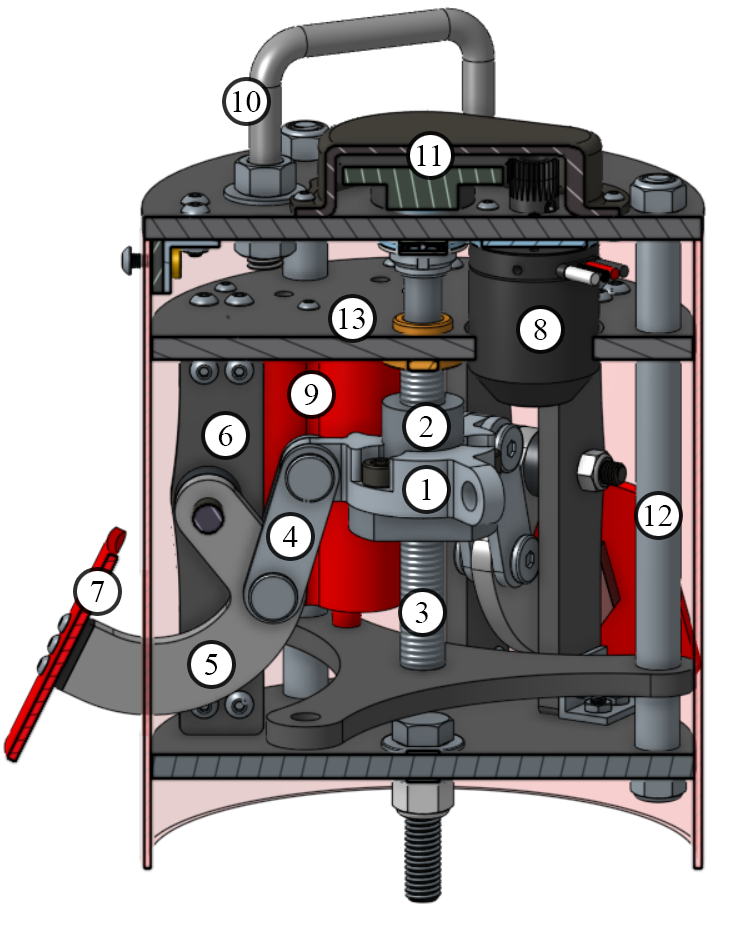
Shown are the nut cuff (1), ballscrew nut (2), ballscrew (3), linkage(4), arm (5), rib (6), flap (7), motor (8), battery holder (9), U-bolt (10), gear and case (11), threaded rod and spacer (12), G10 plates (13).

Flaps actuating from 0 to 80 degrees at 10% speed integrated into Magnolia.
3D Model
Kinematic Simulation & Geometry Optimization
The efficiency of the deployment mechanism is defined by its geometry. The specific lengths of the driving linkages and the position of the pivot points dictate the mechanical advantage throughout the stroke. A poorly optimized geometry could result in torque spikes that stall the motor or drain the battery excessively under aerodynamic load.
We developed a custom Python-based optimization pipeline to iterate through over 1.5 million possible linkage configurations. The goal was to minimize the peak current draw while ensuring the flaps could fully deploy to 80° against high-speed drag forces. The interactive simulation below visualizes the kinematic relationships derived from that study, allowing you to adjust the linkage parameters and observe the resulting mechanical advantage and load distribution in real-time.
Axial Load on Ball Screw Nut vs. Stroke (all 3 flaps)
How the Optimizer Works
The optimizer iterates through all valid pin-coordinate combinations and applies a kinematic-force pipeline at each step. Click through to see how the math resolves at each stage.
Step 1: Define the Two Circles
The linkage and arm are modeled as two intersecting circles. Circle D is centered at the cuff pin with radius = linkage length D→C. Circle B is centered at the fixed pivot with radius = arm length B→C.
(x − Bx)² + (y − By)² = BC²
Analysis
CFD in Ansys Fluent at Mach 0.7 and 80° deployment confirmed 320 N total drag across all three flaps (106 N per flap). Pressure drag dominates; the model intentionally omits the flap-to-airframe gap, conservatively overestimating drag to keep structural margins safe.
Static-structural FEA at worst-case loading (256 N perpendicular to flap face at Mach 0.981 post-burnout) confirmed peak Von Mises stress at pin C: 95 MPa vs. 215 MPa yield strength — factor of safety 2.26.
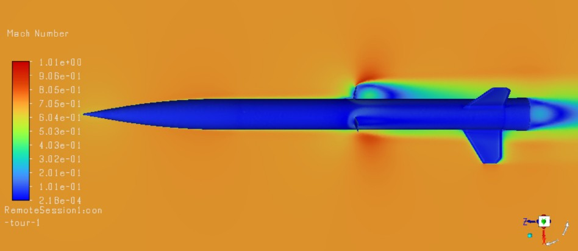
CFD Mach contours verifying flow stability at supersonic transition.
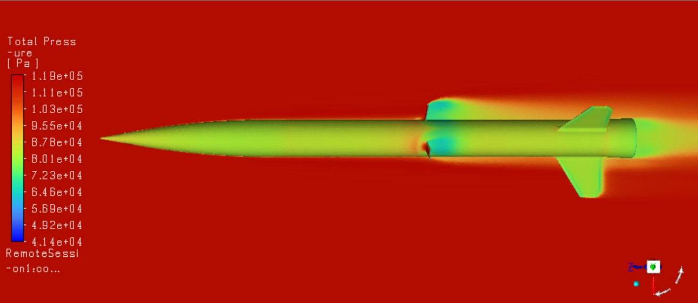
Total pressure distribution on flap faces at Mach 0.7.
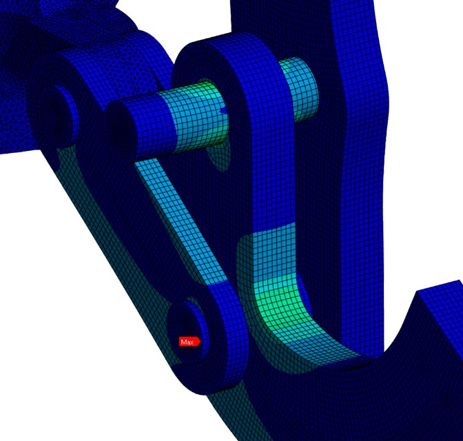
FEA results confirming structural integrity under 256N peak load.
Control Strategy
The STM32H5 microcontroller runs the control loop, modulating the NEO 550 ESC via PWM over a 2-wire magnetic link. Motor position is tracked through the 42-count/rev Hall encoder; absolute position is reset at pre-flight via EGSE umbilical.
Four controller architectures were tested in RocketPy with 370,000 Monte Carlo simulations each. The EMPC pre-computes optimal control laws offline, then evaluates them in microseconds — delivering the lowest RMSE and minimal bias across all environmental variability scenarios.
Manufacturing & Assembly
The transition from CAD to physical hardware required a mix of rapid prototyping and precision machining to meet tight weight and budget constraints.
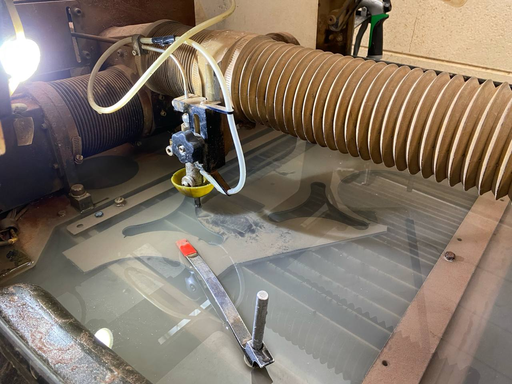
Waterjetting the G10 fiberglass plates.
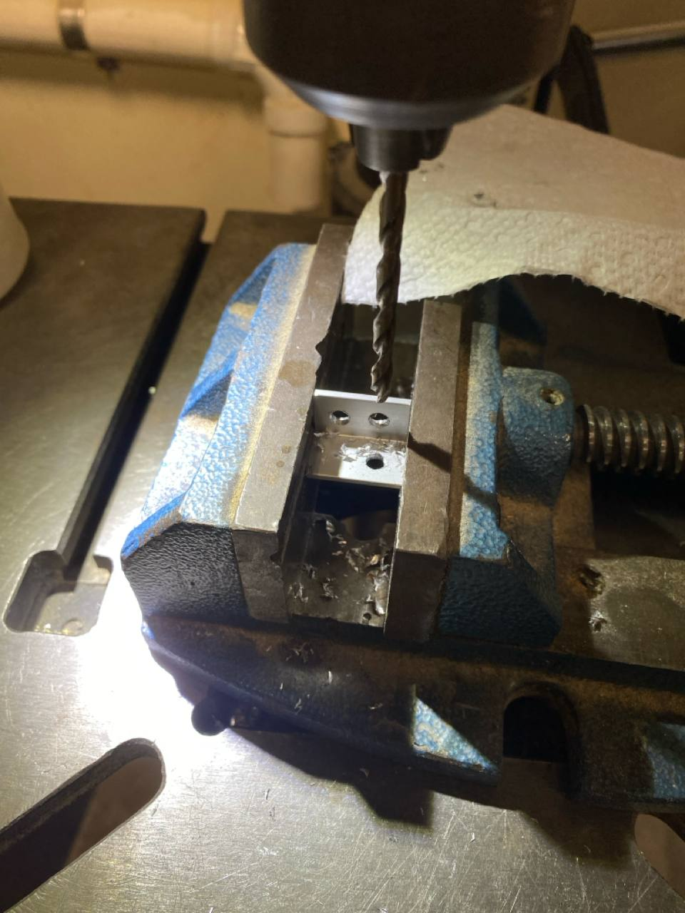
Drilling L-brackets for for attaching the ribs.
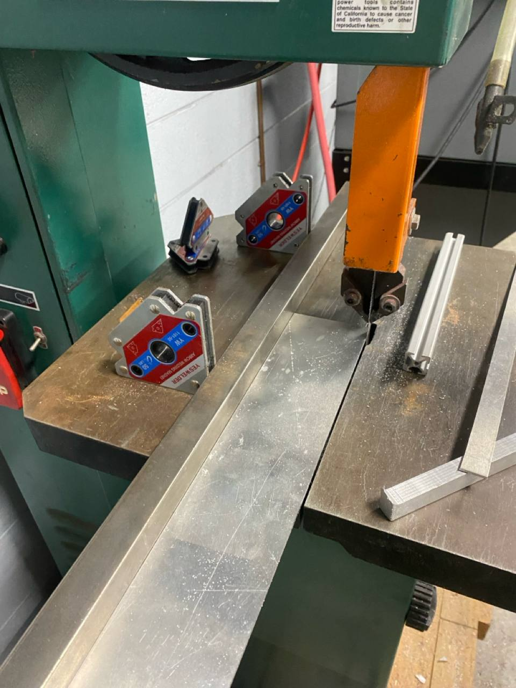
Cutting the aluminum stock on the band saw for the flaps
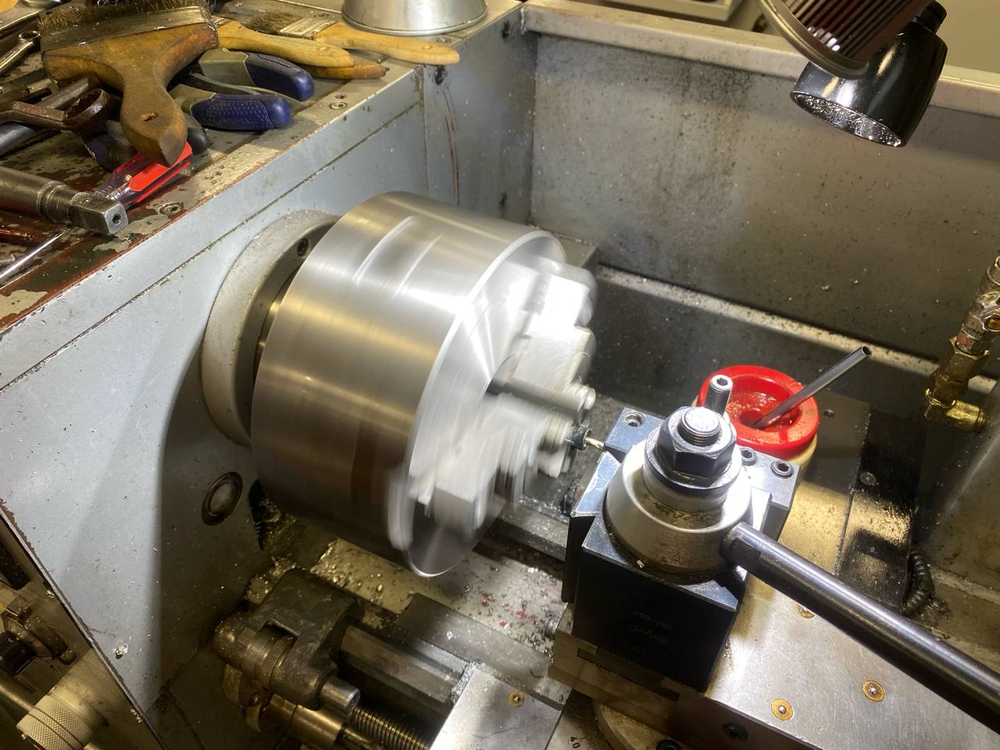
Enlarging the bore in a gear with a lathe.
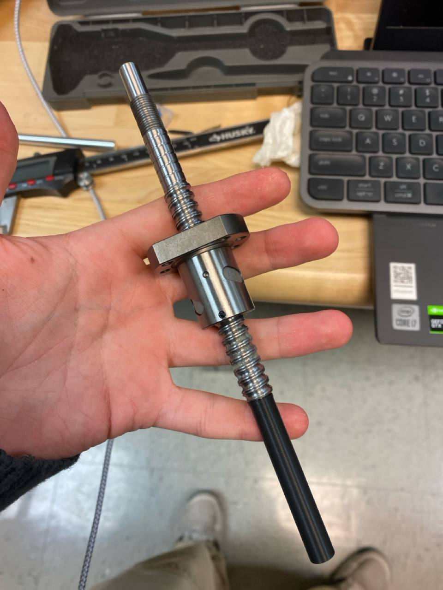
Ballscrew with the tool attached, ready to remove the nut.
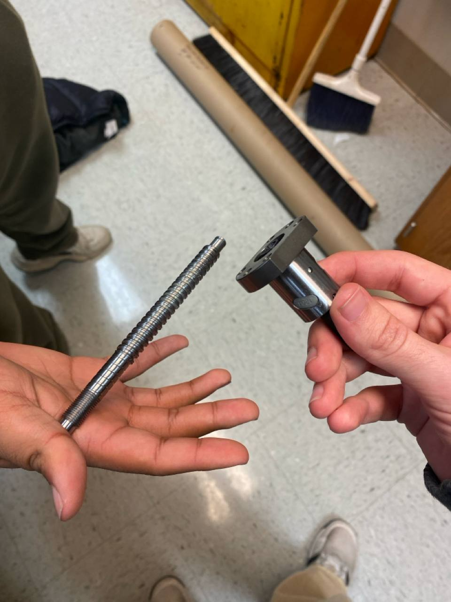
Separated the nut from the ballscrew. The nut is "screwed" onto the tool and about to be reinstalled into the ballscrew with a flipped orientation
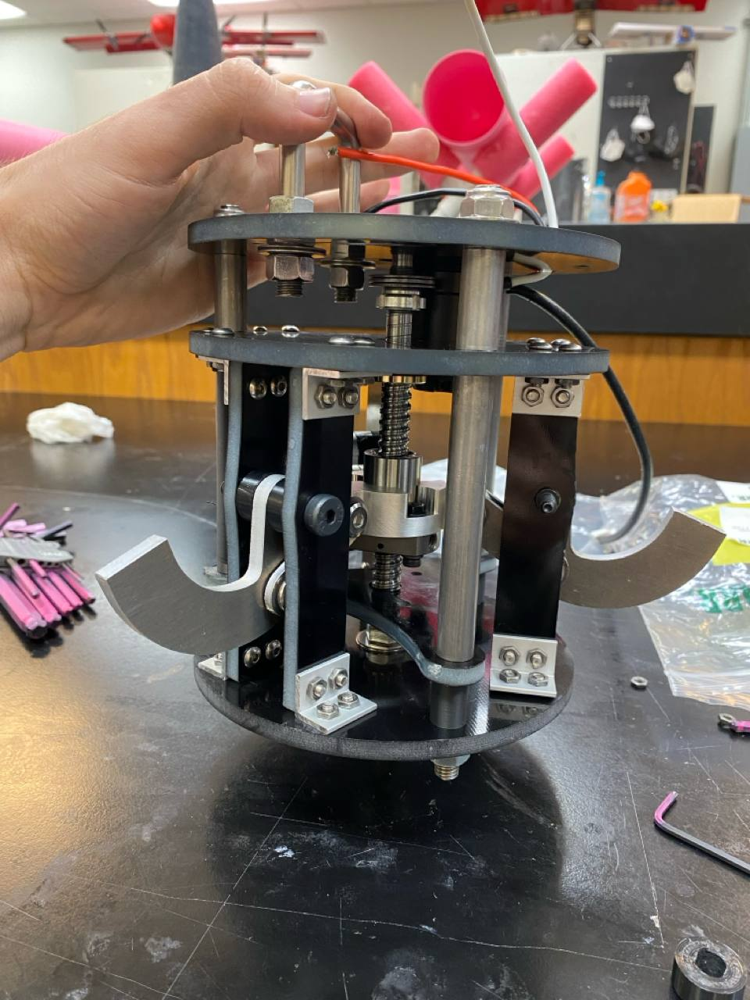
Incomplete assembly of the airbrake mechanism for electrical integration and general mechanical testing.
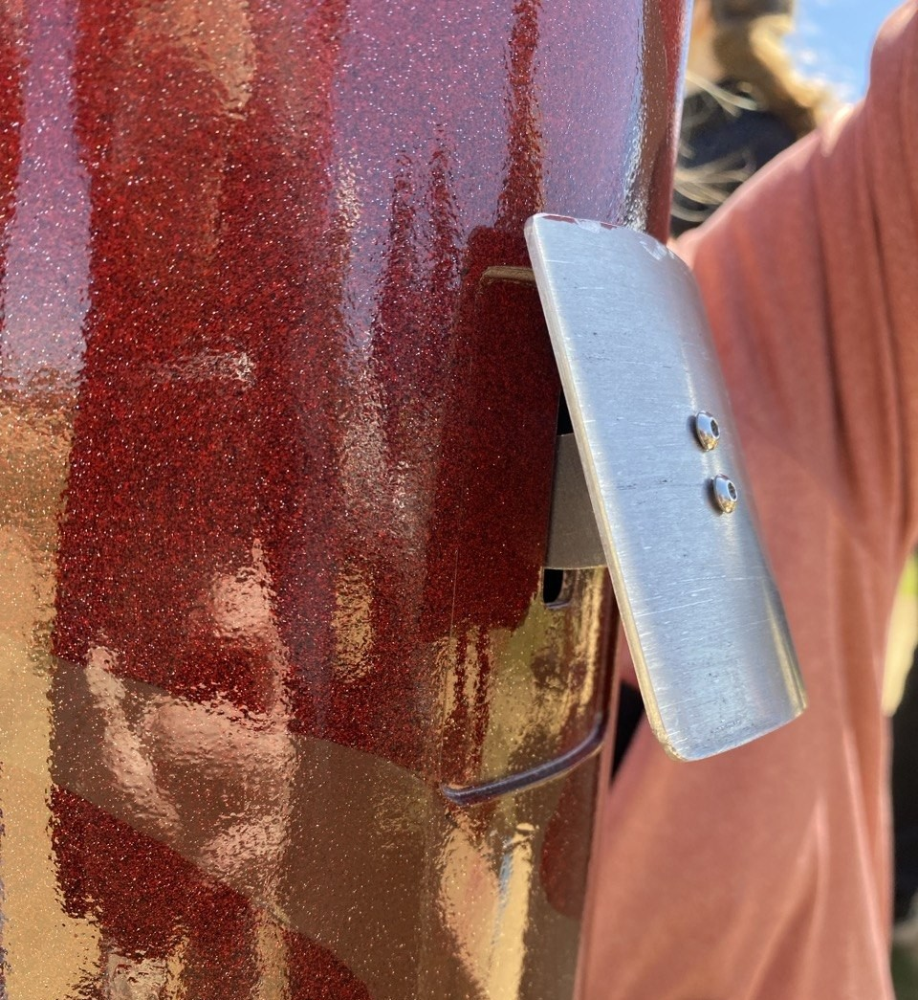
Final assembly of the airbrake mechanism within the rocket structure.
Engineering Challenges & Iterations
Bringing the system to life presented several mechanical integration challenges that required iterative problem-solving:
- Ballscrew Nut Flip: The ballscrew that was purchased had the nut installed in the wrong orientation. Due to how the screw integrated into our design, the nut had to have a specific orientation. To solve this, we 3d printed a shaft that would seamlessly integrate with the ballscrew, allowing us to "unscrew" the nut onto the shaft without loosing the balls in it. Then, we simply re-screwed the nut back on in the correct orientation.
- Ballscrew Constraint: We realized that the ballscrew was not fully constrained in one of the axial directions. This was easily solved by flipping the copper bushing that attached to it, as well as adding a c-clip. Reorienting the bushing slightly affected the nut's maximum travel, but it was negligible.
- Extra Compression: We noticed that it was easier to turn the ballscrew when the system was not fully torqued. The reason for this was that the ballscrew was being overcompressed, making it more difficult to actuate. To solve this, we added 1mm of length to our spacers via a washer, which decreased the compression and eased actuation.
- Gear Bore Size: One of the gear bores was too small for our motor's shaft. This was resolved by enlarging the hole in the lathe. Unluckily, we did not have a boring bar small enough for it, so we grinded an endmill and used it as a boring bar. This resulted in a final hole size within 0.02mm (< 0.001 in) of tolerance.
- Axial Positioning: Since we added extra length to the spacers, we had to adjust the axial position of the mechanism to accommodate the changes and match with the airframe's slots. We sanded the tube in which the airbrake was mounted to account for this.
- Flap Intersection: When integrating it with the rest of the rocket, we noticed that there was not enough clearance between the top of the flaps and the airframe recessed pocket. This was resolved by chamfering the top of the flap and its equivalent in the airframe.
Conclusion
The development of the IREC 2026 airbrake system demonstrates the successful integration of rigorous mechanical design, high-precision manufacturing, and advanced control theory. By leveraging iterative simulation and optimization, the team achieved a robust solution that meets all competition requirements while maintaining significant safety margins. This project serves as a cornerstone for UGA Rocketry’s mission to achieve consistent apogee accuracy and pushes the boundaries of student-led aerospace engineering.